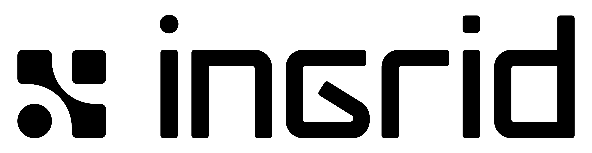

making the grid intelligent for an electrified future
The complete visual identity for Ingrid Capacity — logo, color, type, the signature gradient, photography, iconography, and the Fluid Intelligence visual system.
01 · Logo
The Arc, and the wordmark.
The logo pairs The Arc symbol with the ingrid wordmark. Pick the variant by background — never recolor with CSS filters. The wordmark is never shown without the Arc.
Full logo — Arc + wordmark
Color · on light
color-on-light.png
Color · on dark / gradient
color-on-dark.png

Mono · on light
mono-on-light.png
Mono · on dark
mono-on-dark.png
Mark only — The Arc symbol
Mark · on light
mark-on-light.png
Mark · on dark
mark-on-dark.png
Anatomy — structure + intelligence
Three rounded squares in an L/grid pattern — the modular grid, structure and order.
One Flux Violet circle (#AA73FA) — the intelligence node, the "thinking brain."
Together they form The Arc: structure and expression joined. Used as the app icon, uniform print, and social avatar.
Do not
Recolor (beyond approved mono/color variants)
Apply a gradient to the logo itself
Reconfigure the mark arrangement
Create new lockups
Distort or skew
Add shadows or effects
Show the wordmark without the Arc
Place on insufficient-contrast backgrounds
02 · Color
Core, neutrals, and natural energies.
Proportion rule: 50% core & neutrals, 30% the Ingrid Gradient, 20% the Natural Energies — used sparingly in data, icons, and fine detail.
Core black 25%
White 25%
Gradient 30%
Core palette & Natural Energies
Digital — gray scale (7 stops)
Digital — Flux Violet tint scale (7 stops)
Use tints for hover states, backgrounds, disabled states, and subtle brand-tinted surfaces.
Alert colors — brand-adapted signals
03 · Typography
Plus Jakarta Sans & Fira Code.
Plus Jakarta Sans carries all display, headline, and body text. Fira Code is reserved for captions, eyebrows, footers, and technical highlights. Aptos is the system fallback only.
HeadlinePlus Jakarta · Medium 500 · ≥4× body · lowercase
we make the grid flex, not break.
Sub-headerPlus Jakarta · Bold 700 · 100% body · ALL CAPS
GRID-SCALE FLEXIBILITY
BodyPlus Jakarta · Light 300 · <20pt · sentence case
Behind every connection point is software balancing supply, demand, and price in real time — making the grid intelligent enough to use what it already has.
Caption / eyebrowFira Code · 40% body · ALL CAPS
INGRID CAPACITY · GRID-SCALE FLEXIBILITY
Key rules: headlines are Medium (500), not ExtraBold — and intentionally lowercase. Body is always Light (300). Sub-headers are Bold (700) ALL CAPS.
04 · The Ingrid Gradient
The signature expression.
The gradient is a real PNG image, not a CSS gradient. Reserve it for key communications — hero visuals, campaigns, covers — and let it interact with the grid for depth rather than sitting as a flat overlay.
pastel.png
Bare gradient texture — slide background, panel fill.
dark.png
Dark moody variant — black base with purple/orange glows.
cover-centered.png
Gradient + centered logo + tagline — official cover.
cover-topleft.png
Flipped gradient + logo top-left — alternative cover.
Color stops — Freeform Gradient
#AA73FA Flux VioletCenter-left · 40%
#4C92E9 Dark Current BlueUpper right
#EE686C Dark Ember OrangeLower left
#E0790D Dark Solar YellowLower right
Violet–blue in the upper half, warm orange–gold below, violet dominating the center. The 2px progress bar is the only place a CSS approximation is used: linear-gradient(135deg,#6CA6F3,#AE76F2,#D981B7).
Application techniques
Mask into shape — apply the gradient to any form or container.
Soften & blend — feather edges; adjust with Freeform Gradient for seamless flow.
Morph organically — let it evolve into soft shapes that interact with key visuals.
Keep everyday usage minimal and intentional.
Do not recreate it with CSS radial-gradients — use the PNG.
05 · Photography
People, technology, natural energy.
Photography captures the dynamic relationship between people, technology, and the natural energy systems around them — using unexpected angles, full systems in context, and a balance of nature and precision.
Energy Landscape
Grid infrastructure, solar, wind, and Nordic landscapes — the broader system from generation to storage to distribution. Aerial and abstract angles; motion over static literalism.
Hero · sunset turbinesWind + solar mixGrid towerStorage · NordicSite · Nivala FITurbines · alt angle
People / Society / Business
The human side — authentic, diverse individuals captured mid-motion, in real environments shaped by Ingrid. People shown within the broader energy network.
TeamOn site
Intelligent Expert
The precision and systems-thinking behind the solutions — experts immersed in interfaces and system controls, with organic data visualizations echoing the gradient. Note: this photo set is still being finalized (v2.1, Aug 2025).
06 · Iconography
Simple geometry, subtle rounding.
Clear and scalable across all contexts. Adapted from the Google Material Design open-source library — grids, stroke weights, and proportions aligned to the Ingrid brand.
Communications · Marketing · Social. Solid shapes; may use the gradient fill for emphasis.
07 · Visual System
Fluid Intelligence.
The system draws from The Arc — a union of structure (the grid squares) and expression (the organic circle). Precise, adaptive, alive.
2× Modular Grid
Structure, order, scalability. Start at 2 columns; scale by doubling. A guide, not a cage — add lines only when needed.
248163264
The Ingrid Gradient
Expression, adaptability, emotional depth — the organic counterpart to the grid. Masked into shape, feathered, morphed into soft organic blobs.
Maintain rhythm and balance — spacing and negative space should guide the eye naturally. Let key visuals and typography interact with the grid when it enhances expression.
08 · Design Tokens
CSS variables.
The same tokens used across the decks (engine/engine.css). Source of truth: brand/ingrid/BRAND.md.